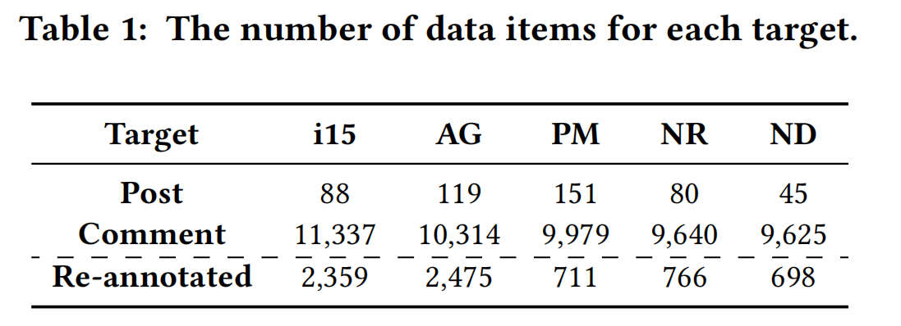
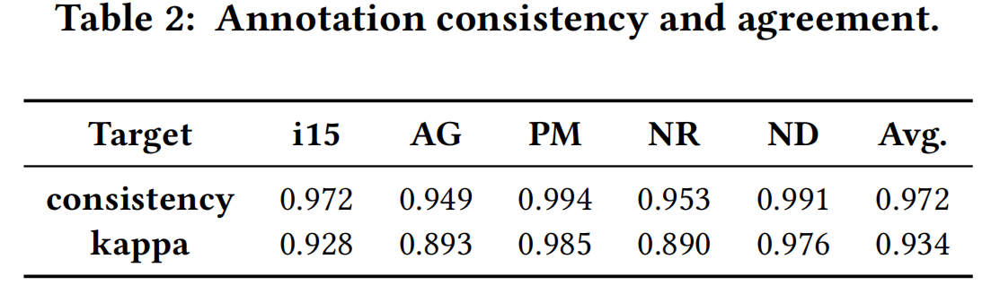
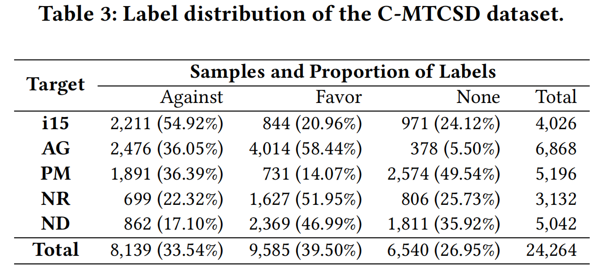
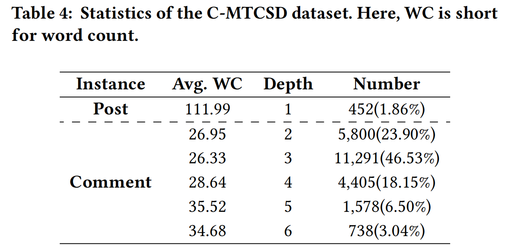
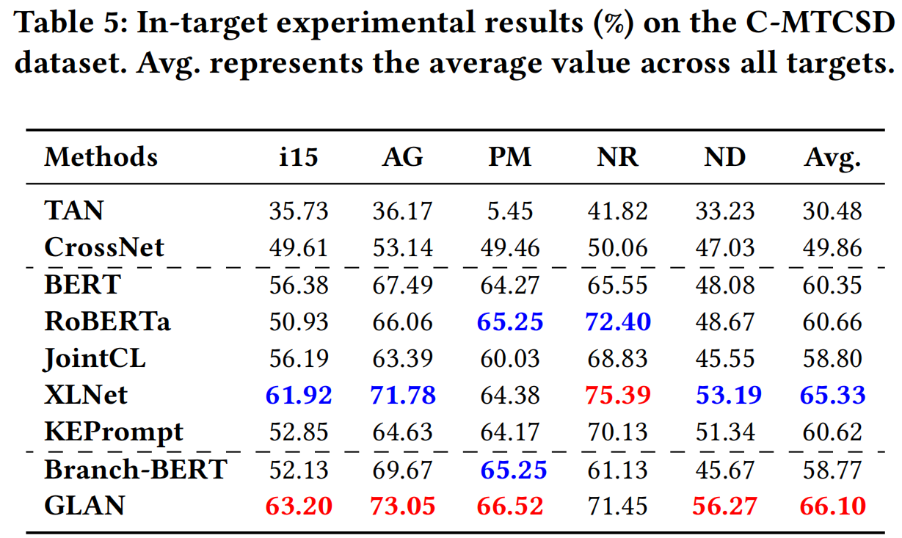
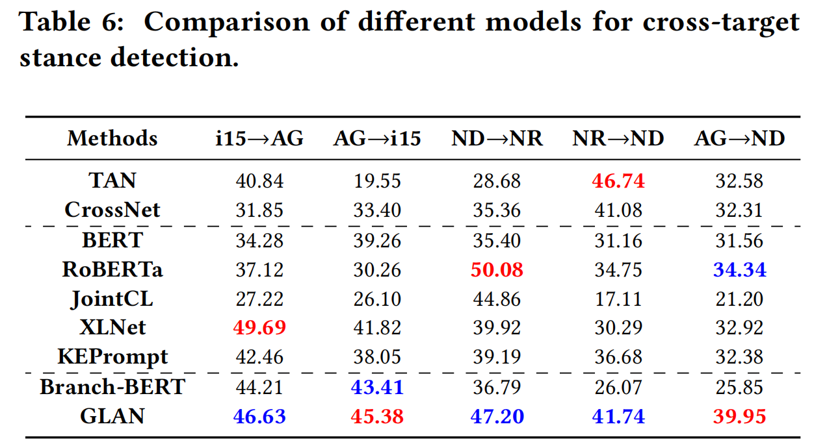
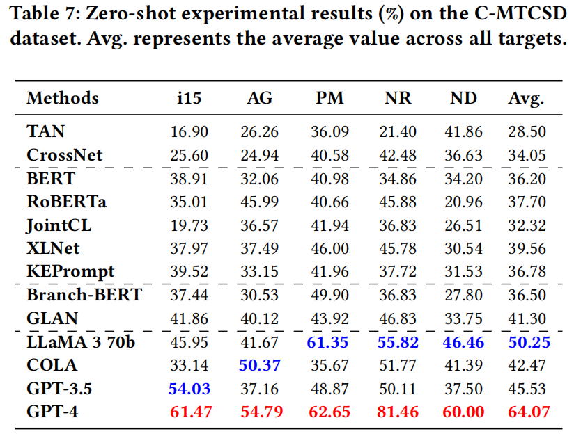
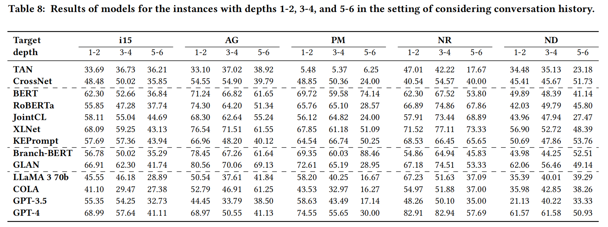

C-MTCSD / STANCE IN CONTEXT
C-MTCSD
沿着对话，读懂真实立场。
中文多轮对话立场检测数据集与基准。保留从原帖到当前评论的回复路径，让模型结合讨论目标与前文，判断当前发言的支持、反对或未明确表态。
- WWW 2025 Companion
- 共同第一作者
- 数据集与基准
01 FROM DISCUSSION TO DATA
从真实讨论，整理对话的来路
围绕 iPhone 15、萝卜快跑、预制菜、裸辞和不婚主义，从微博采集原帖与评论，再整理原帖到当前句的祖先回复路径。表中分别记录各目标的原帖、评论及复标数量，呈现数据构建阶段的材料规模。

02 ALIGNING THE ANNOTATION
先对齐判断对象，
再检查标注一致性
赞同父评论，不一定意味着支持讨论目标。标注以当前句对指定目标的态度为准，通过试标校准、多人独立标注与争议复标统一口径；表中用一致率和 Kappa，分别检查判断重合程度与扣除随机一致后的可靠性。

03 ONE TASK, DIFFERENT TARGETS
同一套标签，不同的立场分布
数据集包含 24,264 条标注实例，使用 Against、Favor、None 三类标签。各目标的支持、反对与未明确表态比例并不相同：理解这些分布，是比较模型表现、分析目标差异的起点。

04 HOW FAR CONTEXT REACHES
一句回复背后，有多长的上下文
路径深度包含原帖，最深到六层；最后一个节点是预测对象，前面的节点提供理解线索。表中同时列出各深度的实例数量、占比和平均词数，帮助区分对话层级与文本长度，也为后续分层评测提供依据。

05 BENCHMARKING WITHIN TARGETS
在熟悉的目标内，建立比较基线
在同一目标的训练与测试划分上，对照传统神经方法、中文预训练模型与对话相关方法。主指标 F_avg 对反对、支持两类的 F1 取平均；表中按目标分别报告结果，再汇总目标平均值，避免只看一个总分。

06 TRANSFERRING ACROSS TARGETS
换一个目标，理解还能迁移吗
从一个目标迁移到另一个目标，模型需要面对新的讨论内容与表达习惯。表中箭头表示训练目标到测试目标的方向；分别比较各条迁移路径，观察方法对目标变化的适应，而不将迁移看作对称过程。

07 REASONING ABOUT UNSEEN TARGETS
未见目标下，对照不同理解方式
零样本设置进一步检验模型在未见目标上的立场判断。表中纳入传统与预训练基线，以及 LLaMA、GPT 系列和 COLA 等大模型提示方法。COLA 是本研究适配的已有基线，数据集本身并非 Agent 产品。

08 LOOKING BEYOND THE AVERAGE
深入回复链，看见平均分之外的难点
将路径按深度 1–2、3–4、5–6 分组，在保留对话历史的设置下比较模型表现。深层回复中的指代与隐式表达更值得关注，但不同目标、方法的变化并不一致；结合前面的类别分布和深层样本量，才能更准确地理解分组结果。
